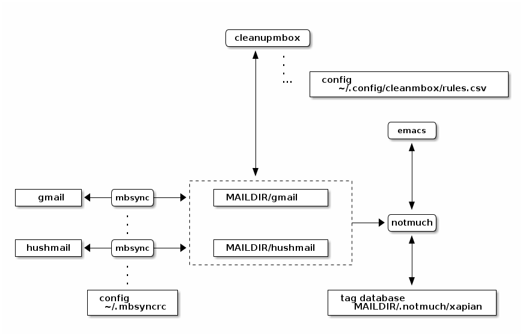

email setup
Table of Contents
1. Introduction
Setting up email automation on my primary desktop.
1.1. TL;DR
To tidy emails:
$ mbsync -a --pull # fetch new emails from providers $ cleanupmbox # apply automatic rules (on local copy) $ mbsync -a --push # propagate deletes/moves back to providers $ notmuch new # recognize new mail
Read email locally (with favored maildir++-compliant reader),
and/or enjoy tidied email on provider's system (e.g. gmail in browser)
Alternatively can search from command line:
$ notmuch search sometext
1.2. Overview
After some investigation settled on:
- isync
- (aka
mbsync) to synchronize provider email with a maildir tree - notmuch
- for offline email indexing/search.
- notmuch-emacs
- emacs module for local email reading
Wrote a custom python script cleanupmbox to operate programatically
on the local MAILDIR tree. Script has enough content to deserve its own page,
next after this one.

Notes:
mbsyncconfiguration in~/.mbsyncrc- emails kept under
~/.mail cleanmboxsymlinks to~/proj/env/bin/cleanupmbox.pycleanmboxrules in~/.config/cleanmbox/rules.csv
1.3. Goals
I had the following goals:
- automate email handling: want ability to move emails into folders based on pattern-matching rules
- fetch email from multiple providers (gmail, hushmail), browse from the same filesystem tree.
- synchronize email disposition with providers, so that using browser on their site (especially from phone) will provide an up-to-date view.
1.4. Links
- https://anarc.at/blog/2021-11-21-mbsync-vs-offlineimap/ isync vs offlineimap, plus useful example configuration.
- https://wiredspace.de/blog/mbsync/
- https://wiki.archlinux.org/title/Isync lovely isync configuration examples
1.5. Setup Instructions
1.5.1. Scaffold Maildir Tree
$ mkdir -p ~/.mail/gmail $ mkdir -p ~/.mail/hushmail
- Isync Setup
Install isync into shell environment; may want to later set this up to poll periodically.
$ nix-env -i isync
Anonymized configuration file:
hushmail part:
# ~/.mbsyncrc IMAPAccount hushmail # address to connect Host imap.hushmail.com User replacewithuser@hushmail.com # if you're comfortable with plaintext: #Pass replacewithpassword # # PassCmd value encrypted with something like # $ echo replacewithpassword | gpg --recipient mygpgusername -a -o ~/.hushmail.gpg --encrypt PassCmd "gpg --no-tty --for-your-eyes-only -dq ~/.hushmail.gpg" # enable TLS SSLType IMAPS CertificateFile /etc/ssl/certs/ca-certificates.crt # remote IMAPStore hushmail-remote Account hushmail # local MaildirStore hushmail-local Subfolders Verbatim # must have trailing / Path ~/.mail/hushmail/ Inbox ~/.mail/hushmail/Inbox Channel hushmail Far :hushmail-remote: Near :hushmail-local: # include everything for now Patterns * # auto-create missing mailboxes Create Both # delete messages (enable after seeing sync work) Expunge Both # save synchronization state SyncState * # propagate mailbox deletion (enable after seeing sync work) Remove both
gmail part:
IMAPAccount gmail Host imap.gmail.com User replacewithuser@gmail.com # encrypted with something like # $ echo replacewithpassword | gpg --recipient mygpgusername -a -o ~/.gmail.gpg --encrypt PassCmd "gpg --no-tty --for-your-eyes-only -dq ~/.gmail.gpg" SSLType IMAPS CertificateFile /etc/ssl/certs/ca-certificates.crt # remote IMAPstore gmail-remote Account gmail # local MaildirStore gmail-local Subfolders Maildir++ Inbox ~/.mail/gmail Channel gmail Far :gmail-remote: Near :gmail-local: MaxMessages 15000 ExpireUnread yes # # in particular, excluding: # [Gmail]/Drafts, [Gmail]/Spam, [Gmail]/Trash # Patterns * ![Gmail]* "[Gmail]/Sent Mail" "[Gmail]/Important" "[Gmail]/Starred" "[GMail]/All Mail" #Patterns * Sync all Create Both Expunge Both SyncState * Remove both
1.5.2. Isync Use
sync email folders from all providers:
$ mbsync -a
or to just sync with hushmail provider
$ mbsync hushmail
To just propagate changes from gmail to local:
$ mbsync gmail --pull
Similarly, to just propagate changes to hushmail:
$ mbsync hushmail --push
1.5.3. Notmuch Setup
Installed notmuch via nix flake in my project xo-nix2.
see https://github.com/rconybea/xo-nix2/blob/mail/flake.nix
Accomplished this by adding notmuch, emacsPackages.notmuch to devShells.packages:
devShells = { default = pkgs.mkShell.override { stdenv = env; } { packages = [ ... pkgs.notmuch pkgs.emacsPackages.notmuch ... ]; }; };
Installing this way ensures that emacs, notmuch and notmuch-emacs versions are coordinated.
notmuch gets setup interactively:
$ notmuch setup Your full name: Your primary email address: alice@gmail.com Additional email address [Press 'Enter' if none]: Top-level directory of your email archive:/home/alice/.mail Tags to apply to all new messages (separated by spaces) [ unread inbox]: Tags to exclude when searching messages (separated by spaces) [ junk]:
This creates empty tag database in MAILDIR=/.notmuch (/home/alice/.mail/.notmuch here)
Populate tag database with contents of MAILDIR:
$ notmuch new
Default notmuch-emacs setup is almost trivial.
In ~/.emacs:
(require 'notmuch)
(but also see M-x customize-group RET notmuch RET)
Now can browse email from emacs with M-x notmuch.
1.5.4. Outgoing Mail Setup
in ~/.emacs:
(require 'smtpmail) (setq user-mail-address "replacewithuser@gmail.com" user-full-name "Alice Exampleton") (setq message-send-mail-function 'smtpmail-send-it) (setq smtpmail-stream-type 'starttls ;;smtpmail-default-smtp-server "smtp.hushmail.com" smtpmail-smtp-server "smtp.gmail.com" smtpmail-smtp-service 587 ) (setq message-kill-buffer-on-exit t)
For smtpmail, We also need ~/.authinfo to provide login credentials
machine smtp.gmail.com login replacewithuser@gmail.com port 587 password replacewithpassword
Here replacewithpassword needs to be a "google app password".
Obtain this from gmail.com -> account settings -> security -> 2-step verification -> app passwords
Now can send email with C-x m
1.6. Lessons and Tradeoffs
- for email syncing, I looked at
offlineimapandisync. Choseisyncbecause it's reported to be faster, and I had a large (100k+) backlog of email to deal with. This seems to have worked out well.isyncis designed to work with multiple email providers (whatisynccalls 'channels'). gmail eventually cuts off (or maybe times out) socket connections when trying to sync a large number of messages. Settled on 15k message cap for the gmail channel
# .mbsyncrc Channel gmail ... MaxMessages 15000 ...
Scripting email-moving between
maildirdirectories is non-trivial. To do this correctly you need to update embedded email identifiers, otherwise synchronization won't be able to tell the difference between copy and move. Python has a builtin library (mailbox) that's simple to use, and takes care of this.It does come with a constraint: as far as I can tell, it expects email to be stored in the
maildir++format, rather than regularmaildir.In
maildir++, folder->filesystem structure is flattened. A folderfoo/barwill be stored in a directory.foo.bar, so typically would have all folders in a single directory.Multiple channels muddies the filesystem picture, since different channels will map to sibling filesystem directories.
For example:
${MAILDIR} +- gmail | +- .receipts | +- .travel | .. +- hushmail +- .policy ..I originally looked at
mufor indexing (along withmu4efor email reading in emacs); however that project doesn't seem to handlemaildir++with multiple providers in separate directories like above.Fortunately,
notmuchaccomodates this, since it just needs a path under${MAILDIR}. For example: to look at emails ingmail/.receipts, usefolder:gmail/.receiptsin anotmuchsearch.- Needed a detour to setup PGP (see gpg-setup.html), to circumvent having plaintext passwords in configuration files.